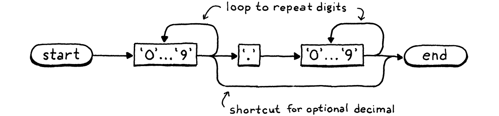

按需扫描
Literature is idiosyncratic arrangements in horizontal lines in only twenty-six phonetic symbols, ten Arabic numbers, and about eight punctuation marks.
Kurt Vonnegut, Like Shaking Hands With God: A Conversation about Writing 文学就是26个字母、10个阿拉伯数字和大概8个标点符号的水平排列。（冯尼古特《像与上帝握手：关于写作的谈话》）
Our second interpreter, clox, has three phases—scanner, compiler, and virtual machine. A data structure joins each pair of phases. Tokens flow from scanner to compiler, and chunks of bytecode from compiler to VM. We began our implementation near the end with chunks and the VM. Now, we’re going to hop back to the beginning and build a scanner that makes tokens. In the next chapter, we’ll tie the two ends together with our bytecode compiler. 我们的第二个解释器clox分为三个阶段——扫描器、编译器和虚拟机。每两个阶段之间有一个数据结构进行衔接。词法标识从扫描器流入编译器，字节码块从编译器流向虚拟机。我们是从尾部开始先实现了字节码块和虚拟机。现在，我们要回到起点，构建一个生成词法标识的扫描器。在下一章中，我们将用字节码编译器将这两部分连接起来。

I’ll admit, this is not the most exciting chapter in the book. With two implementations of the same language, there’s bound to be some redundancy. I did sneak in a few interesting differences compared to jlox’s scanner. Read on to see what they are. 我承认，这并不是书中最精彩的一章。对于同一种语言的两个实现，肯定会有一些冗余。与jlox的扫描器相比，我确实添加了一些有趣的差异点。往下读，看看它们是什么。
16 . 1Spinning Up the Interpreter
Now that we’re building the front end, we can get clox running like a real
interpreter. No more hand-authored chunks of bytecode. It’s time for a REPL and
script loading. Tear out most of the code in main() and replace it with:
现在我们正在构建前端，我们可以让clox像一个真正的解释器一样运行。不需要再手动编写字节码块。现在是时候实现REPL和脚本加载了。删除main()方法中的大部分代码，替换成：
int main(int argc, const char* argv[]) {
initVM();
in main()
replace 26 lines
if (argc == 1) { repl(); } else if (argc == 2) { runFile(argv[1]); } else { fprintf(stderr, "Usage: clox [path]\n"); exit(64); } freeVM();
return 0; }
If you pass no arguments to the executable, you are dropped into the REPL. A single command line argument is understood to be the path to a script to run. 如果你没有向可执行文件传递任何参数，就会进入REPL。如果传入一个参数，就将其当做要运行的脚本的路径。
We’ll need a few system headers, so let’s get them all out of the way. 我们需要一些系统头文件，所以把它们都列出来。
add to top of file
#include <stdio.h> #include <stdlib.h> #include <string.h>
#include "common.h"
Next, we get the REPL up and REPL-ing. 接下来，我们启动REPL并运行。
#include "vm.h"
static void repl() { char line[1024]; for (;;) { printf("> "); if (!fgets(line, sizeof(line), stdin)) { printf("\n"); break; } interpret(line); } }
A quality REPL handles input that spans multiple lines gracefully and doesn’t have a hardcoded line length limit. This REPL here is a little more, ahem, austere, but it’s fine for our purposes. 一个高质量的REPL可以优雅地处理多行的输入，并且没有硬编码的行长度限制。这里的REPL有点……简朴，但足以满足我们的需求。
The real work happens in interpret(). We’ll get to that soon, but first let’s
take care of loading scripts.
真正的工作发生在interpret()中。我们很快会讲到这个问题，但首先让我们来看看如何加载脚本。
add after repl()
static void runFile(const char* path) { char* source = readFile(path); InterpretResult result = interpret(source); free(source); if (result == INTERPRET_COMPILE_ERROR) exit(65); if (result == INTERPRET_RUNTIME_ERROR) exit(70); }
We read the file and execute the resulting string of Lox source code. Then, based on the result of that, we set the exit code appropriately because we’re scrupulous tool builders and care about little details like that. 我们读取文件并执行生成的Lox源码字符串。然后，根据其结果，我们适当地设置退出码，因为我们是严谨的工具制作者，并且关心这样的小细节。
We also need to free the source code string because readFile() dynamically
allocates it and passes ownership to its caller. That function looks like this:
我们还需要释放源代码字符串，因为readFile()会动态地分配内存，并将所有权传递给它的调用者。这个函数看起来像这样：
add after repl()
static char* readFile(const char* path) { FILE* file = fopen(path, "rb"); fseek(file, 0L, SEEK_END); size_t fileSize = ftell(file); rewind(file); char* buffer = (char*)malloc(fileSize + 1); size_t bytesRead = fread(buffer, sizeof(char), fileSize, file); buffer[bytesRead] = '\0'; fclose(file); return buffer; }
Like a lot of C code, it takes more effort than it seems like it should, especially for a language expressly designed for operating systems. The difficult part is that we want to allocate a big enough string to read the whole file, but we don’t know how big the file is until we’ve read it. 像很多C语言代码一样，它所花费的精力比看起来要多，尤其是对于一门专为操作系统而设计的语言而言。困难的地方在于，我们想分配一个足以读取整个文件的字符串，但是我们在读取文件之前并不知道它有多大。
The code here is the classic trick to solve that. We open the file, but before
reading it, we seek to the very end using fseek(). Then we call ftell()
which tells us how many bytes we are from the start of the file. Since we seeked
(sought?) to the end, that’s the size. We rewind back to the beginning, allocate
a string of that size, and read the whole file in a
single batch.
这里的代码是解决这个问题的经典技巧。我们打开文件，但是在读之前，先通过fseek()寻找到文件的最末端。接下来我们调用ftell()，它会告诉我们里文件起始点有多少字节。既然我们定位到了最末端，那它就是文件大小。我们退回到起始位置，分配一个相同大小的字符串，然后一次性读取整个文件。
So we’re done, right? Not quite. These function calls, like most calls in the C standard library, can fail. If this were Java, the failures would be thrown as exceptions and automatically unwind the stack so we wouldn’t really need to handle them. In C, if we don’t check for them, they silently get ignored. 这样就完成了吗？不完全是。这些函数调用，像C语言标准库中的大多数调用一样，可能会失败。如果是在Java中，这些失败会被当做异常抛出，并自动清除堆栈，所以我们实际上并不需要处理它们。但在C语言中，如果我们不检查，它们就会被忽略。
This isn’t really a book on good C programming practice, but I hate to encourage bad style, so let’s go ahead and handle the errors. It’s good for us, like eating our vegetables or flossing. 这并不是一本关于良好C语言编程实践的书，但我讨厌鼓励糟糕的编程风格，所以让我们继续处理这些错误。这对我们有好处，就像吃蔬菜或使用牙线清洁牙齿一样。
Fortunately, we don’t need to do anything particularly clever if a failure occurs. If we can’t correctly read the user’s script, all we can really do is tell the user and exit the interpreter gracefully. First of all, we might fail to open the file. 幸运地是，如果发生故障，我们不需要特别聪明的做法。如果我们不能正确地读取用户的脚本，我们真正能做的就是告诉用户并优雅地退出解释器。首先，我们可能无法打开文件。
FILE* file = fopen(path, "rb");
in readFile()
if (file == NULL) { fprintf(stderr, "Could not open file \"%s\".\n", path); exit(74); }
fseek(file, 0L, SEEK_END);
This can happen if the file doesn’t exist or the user doesn’t have access to it. It’s pretty common—people mistype paths all the time. 如果文件不存在或用户没有访问权限，就会发生这种情况。这是很常见的——人们经常会输入错误的路径。
This failure is much rarer: 下面这种错误要少见得多：
char* buffer = (char*)malloc(fileSize + 1);
in readFile()
if (buffer == NULL) { fprintf(stderr, "Not enough memory to read \"%s\".\n", path); exit(74); }
size_t bytesRead = fread(buffer, sizeof(char), fileSize, file);
If we can’t even allocate enough memory to read the Lox script, the user’s probably got bigger problems to worry about, but we should do our best to at least let them know. 如果我们甚至不能分配足够的内存来读取Lox脚本，那么用户可能会有更大的问题需要担心，但我们至少应该尽最大努力让他们知道。
Finally, the read itself may fail. 最后，读取本身可能会失败。
size_t bytesRead = fread(buffer, sizeof(char), fileSize, file);
in readFile()
if (bytesRead < fileSize) { fprintf(stderr, "Could not read file \"%s\".\n", path); exit(74); }
buffer[bytesRead] = '\0';
This is also unlikely. Actually, the calls to
fseek(), ftell(), and rewind() could theoretically fail too, but let’s not
go too far off in the weeds, shall we?
这也是不大可能发生的。实际上，fseek(), ftell(), 和rewind() 的调用在理论上也可能会失败，但是我们不要太过深入，好吗？
16 . 1 . 1Opening the compilation pipeline 开启编译管道
We’ve got ourselves a string of Lox source code, so now we’re ready to set up a
pipeline to scan, compile, and execute it. It’s driven by interpret(). Right
now, that function runs our old hardcoded test chunk. Let’s change it to
something closer to its final incarnation.
我们已经得到了Lox源代码字符串，所以现在我们准备建立一个管道来扫描、编译和执行它。管道是由interpret()驱动的。现在，该函数运行的是旧的硬编码测试字节码块。我们来把它改成更接近其最终形态的东西。
void freeVM();
function interpret()
replace 1 line
InterpretResult interpret(const char* source);
void push(Value value);
Where before we passed in a Chunk, now we pass in the string of source code. Here’s the new implementation: 以前我们传入一个字节码块，现在我们传入的是源代码的字符串。下面是新的实现：
function interpret()
replace 4 lines
InterpretResult interpret(const char* source) { compile(source); return INTERPRET_OK;
}
We won’t build the actual compiler yet in this chapter, but we can start laying out its structure. It lives in a new module. 在本章中，我们还不会构建真正的编译器，但我们可以开始布局它的结构。它存在于一个新的模块中。
#include "common.h"
#include "compiler.h"
#include "debug.h"
For now, the one function in it is declared like so: 目前，其中有一个函数声明如下：
create new file
#ifndef clox_compiler_h #define clox_compiler_h void compile(const char* source); #endif
That signature will change, but it gets us going. 这个签名以后会变，但现在足以让我们继续工作。
The first phase of compilation is scanning—the thing we’re doing in this chapter—so right now all the compiler does is set that up. 编译的第一阶段是扫描——即我们在本章中要做的事情——所以现在编译器所做的就是设置扫描。
create new file
#include <stdio.h> #include "common.h" #include "compiler.h" #include "scanner.h" void compile(const char* source) { initScanner(source); }
This will also grow in later chapters, naturally. 当然，这在后面的章节中也会继续扩展。
16 . 1 . 2The scanner scans 扫描器扫描
There are still a few more feet of scaffolding to stand up before we can start writing useful code. First, a new header: 在我们开始编写实际有用的代码之前，还有一些脚手架需要先搭建起来。首先，是一个新的头文件：
create new file
#ifndef clox_scanner_h #define clox_scanner_h void initScanner(const char* source); #endif
And its corresponding implementation: 还有其对应的实现：
create new file
#include <stdio.h> #include <string.h> #include "common.h" #include "scanner.h" typedef struct { const char* start; const char* current; int line; } Scanner; Scanner scanner;
As our scanner chews through the user’s source code, it tracks how far it’s gone. Like we did with the VM, we wrap that state in a struct and then create a single top-level module variable of that type so we don’t have to pass it around all of the various functions. 当我们的扫描器一点点处理用户的源代码时，它会跟踪自己已经走了多远。就像我们在虚拟机中所做的那样，我们将状态封装在一个结构体中，然后创建一个该类型的顶层模块变量，这样就不必在所有的函数之间传递它。
There are surprisingly few fields. The start pointer marks the beginning of
the current lexeme being scanned, and current points to the current character
being looked at.
这里的字段少得惊人。start指针标识正在被扫描的词素的起点，而current指针指向当前正在查看的字符。

We have a line field to track what line the current lexeme is on for error
reporting. That’s it! We don’t even keep a pointer to the beginning of the
source code string. The scanner works its way through the code once and is done
after that.
我们还有一个line字段，用于跟踪当前词素在哪一行，以便进行错误报告。就是这样！我们甚至没有保留指向源代码字符串起点的指针。扫描器只处理一遍代码，然后就结束了。
Since we have some state, we should initialize it. 因为我们有一些状态，我们还应该初始化它。
add after variable scanner
void initScanner(const char* source) { scanner.start = source; scanner.current = source; scanner.line = 1; }
We start at the very first character on the very first line, like a runner crouched at the starting line. 我们从第一行的第一个字符开始，就像一个运动员蹲在起跑线上。
16 . 2A Token at a Time 一次一个标识
In jlox, when the starting gun went off, the scanner raced ahead and eagerly scanned the whole program, returning a list of tokens. This would be a challenge in clox. We’d need some sort of growable array or list to store the tokens in. We’d need to manage allocating and freeing the tokens, and the collection itself. That’s a lot of code, and a lot of memory churn. 在jlox中，当发令枪响起时，扫描器飞快地前进，急切地扫描整个程序，并返回一个词法标识序列。这在clox中有点困难。我们需要某种可增长的数组或列表来存储标识。我们需要管理标识的分配和释放，以及集合本身。这需要大量的代码和大量的内存。
At any point in time, the compiler needs only one or two tokens—remember our grammar requires only a single token of lookahead—so we don’t need to keep them all around at the same time. Instead, the simplest solution is to not scan a token until the compiler needs one. When the scanner provides one, it returns the token by value. It doesn’t need to dynamically allocate anything—it can just pass tokens around on the C stack. 在任何时间点，编译器只需要一个或两个词法标识——记住我们的语法只需要前瞻一个词法标识——所以我们不需要同时保留它们。相反，最简单的解决方案是在编译器需要标识的时候再去扫描。当扫描器提供一个标识时，它按值返回标识。它不需要动态分配任何东西——只需要在C栈上传递词法标识即可。
Unfortunately, we don’t have a compiler yet that can ask the scanner for tokens, so the scanner will just sit there doing nothing. To kick it into action, we’ll write some temporary code to drive it. 不巧的是，我们还没有可以向扫描器请求词法标识的编译器，所以扫描器只能干等着什么也不做。为了让它工作起来，我们要编写一些临时代码来驱动它。
initScanner(source);
in compile()
int line = -1; for (;;) { Token token = scanToken(); if (token.line != line) { printf("%4d ", token.line); line = token.line; } else { printf(" | "); } printf("%2d '%.*s'\n", token.type, token.length, token.start); if (token.type == TOKEN_EOF) break; }
}
This loops indefinitely. Each turn through the loop, it scans one token and prints it. When it reaches a special “end of file” token or an error, it stops. For example, if we run the interpreter on this program: 这个循环是无限的。每循环一次，它就会扫描一个词法标识并打印出来。当它遇到特殊的“文件结束”标识或错误时，就会停止。例如，如果我们对下面的程序运行解释器：
print 1 + 2;
It prints out: 就会打印出：
1 31 'print' | 21 '1' | 7 '+' | 21 '2' | 8 ';' 2 39 ''
The first column is the line number, the second is the numeric value of the token type, and then finally the lexeme. That last empty lexeme on line 2 is the EOF token. 第一列是行号，第二列是标识类型的数值，最后是词素。第2行中最后一个空词素就是EOF标识。
The goal for the rest of the chapter is to make that blob of code work by implementing this key function: 本章其余部分的目标就是通过实现下面这个关键函数，使这块代码能正常工作：
void initScanner(const char* source);
add after initScanner()
Token scanToken();
#endif
Each call scans and returns the next token in the source code. A token looks like this: 该函数的每次调用都会扫描并返回源代码中的下一个词法标识。一个词法标识结构如下：
#define clox_scanner_h
typedef struct { TokenType type; const char* start; int length; int line; } Token;
void initScanner(const char* source);
It’s pretty similar to jlox’s Token class. We have an enum identifying what type
of token it is—number, identifier, + operator, etc. The enum is virtually
identical to the one in jlox, so let’s just hammer out the whole thing.
它和jlox中的Token类很相似。我们用一个枚举来标记它是什么类型的词法标识——数字、标识符、+运算符等等。这个枚举与jlox中的枚举几乎完全相同，所以我们直接来敲定整个事情。
#ifndef clox_scanner_h #define clox_scanner_h
typedef enum { // Single-character tokens. TOKEN_LEFT_PAREN, TOKEN_RIGHT_PAREN, TOKEN_LEFT_BRACE, TOKEN_RIGHT_BRACE, TOKEN_COMMA, TOKEN_DOT, TOKEN_MINUS, TOKEN_PLUS, TOKEN_SEMICOLON, TOKEN_SLASH, TOKEN_STAR, // One or two character tokens. TOKEN_BANG, TOKEN_BANG_EQUAL, TOKEN_EQUAL, TOKEN_EQUAL_EQUAL, TOKEN_GREATER, TOKEN_GREATER_EQUAL, TOKEN_LESS, TOKEN_LESS_EQUAL, // Literals. TOKEN_IDENTIFIER, TOKEN_STRING, TOKEN_NUMBER, // Keywords. TOKEN_AND, TOKEN_CLASS, TOKEN_ELSE, TOKEN_FALSE, TOKEN_FOR, TOKEN_FUN, TOKEN_IF, TOKEN_NIL, TOKEN_OR, TOKEN_PRINT, TOKEN_RETURN, TOKEN_SUPER, TOKEN_THIS, TOKEN_TRUE, TOKEN_VAR, TOKEN_WHILE, TOKEN_ERROR, TOKEN_EOF } TokenType;
typedef struct {
Aside from prefixing all the names with TOKEN_ (since C tosses enum names in
the top-level namespace) the only difference is that extra TOKEN_ERROR type.
What’s that about?
除了在所有名称前都加上TOKEN_前缀（因为C语言会将枚举名称抛出到顶层命名空间）之外，唯一的区别就是多了一个TOKEN_ERROR类型。那是什么呢？
There are only a couple of errors that get detected during scanning: unterminated strings and unrecognized characters. In jlox, the scanner reports those itself. In clox, the scanner produces a synthetic “error” token for that error and passes it over to the compiler. This way, the compiler knows an error occurred and can kick off error recovery before reporting it. 在扫描过程中只会检测到几种错误：未终止的字符串和无法识别的字符。在jlox中，扫描器会自己报告这些错误。在clox中，扫描器会针对这些错误生成一个合成的“错误”标识，并将其传递给编译器。这样一来，编译器就知道发生了一个错误，并可以在报告错误之前启动错误恢复。
The novel part in clox’s Token type is how it represents the lexeme. In jlox, each Token stored the lexeme as its own separate little Java string. If we did that for clox, we’d have to figure out how to manage the memory for those strings. That’s especially hard since we pass tokens by value—multiple tokens could point to the same lexeme string. Ownership gets weird. 在clox的Token类型中，新颖之处在于它如何表示一个词素。在jlox中，每个Token将词素保存到其单独的Java字符串中。如果我们在clox中也这样做，我们就必须想办法管理这些字符串的内存。这非常困难，因为我们是通过值传递词法标识的——多个标识可能指向相同的词素字符串。所有权会变得混乱。
Instead, we use the original source string as our character store. We represent a lexeme by a pointer to its first character and the number of characters it contains. This means we don’t need to worry about managing memory for lexemes at all and we can freely copy tokens around. As long as the main source code string outlives all of the tokens, everything works fine. 相反，我们将原始的源码字符串作为我们的字符存储。我们用指向第一个字符的指针和其中包含的字符数来表示一个词素。这意味着我们完全不需要担心管理词素的内存，而且我们可以自由地复制词法标识。只要主源码字符串的寿命超过所有词法标识，一切都可以正常工作。
16 . 2 . 1Scanning tokens 扫描标识
We’re ready to scan some tokens. We’ll work our way up to the complete implementation, starting with this: 我们已经准备好扫描一些标识了。我们将从下面的代码开始，逐步达成完整的实现：
add after initScanner()
Token scanToken() { scanner.start = scanner.current; if (isAtEnd()) return makeToken(TOKEN_EOF); return errorToken("Unexpected character."); }
Since each call to this function scans a complete token, we know we are at the
beginning of a new token when we enter the function. Thus, we set
scanner.start to point to the current character so we remember where the
lexeme we’re about to scan starts.
由于对该函数的每次调用都会扫描一个完整的词法标识，所以当我们进入该函数时，就知道我们正处于一个新词法标识的开始处。因此，我们将scanner.start设置为指向当前字符，这样我们就能记住我们将要扫描的词素的开始位置。
Then we check to see if we’ve reached the end of the source code. If so, we return an EOF token and stop. This is a sentinel value that signals to the compiler to stop asking for more tokens. 然后检查是否已达到源代码的结尾。如果是，我们返回一个EOF标识并停止。这是一个标记值，它向编译器发出信号，停止请求更多标记。
If we aren’t at the end, we do some . . . stuff . . . to scan the next token. But we haven’t written that code yet. We’ll get to that soon. If that code doesn’t successfully scan and return a token, then we reach the end of the function. That must mean we’re at a character that the scanner can’t recognize, so we return an error token for that. 如果我们没有达到结尾，我们会做一些……事情……来扫描下一个标识。但我们还没有写这些代码。我们很快就会讲到。如果这段代码没有成功扫描并返回一个词法标识，那么我们就到达了函数的终点。这肯定意味着我们遇到了一个扫描器无法识别的字符，所以我们为此返回一个错误标识。
This function relies on a couple of helpers, most of which are familiar from jlox. First up: 这个函数依赖于几个辅助函数，其中大部分都是在jlox中已熟悉的。首先是：
add after initScanner()
static bool isAtEnd() { return *scanner.current == '\0'; }
We require the source string to be a good null-terminated C string. If the current character is the null byte, then we’ve reached the end. 我们要求源字符串是一个良好的以null结尾的C字符串。如果当前字符是null字节，那我们就到达了终点。
To create a token, we have this constructor-like function: 要创建一个标识，我们还需要这个类似于构造函数的函数：
add after isAtEnd()
static Token makeToken(TokenType type) { Token token; token.type = type; token.start = scanner.start; token.length = (int)(scanner.current - scanner.start); token.line = scanner.line; return token; }
It uses the scanner’s start and current pointers to capture the token’s
lexeme. It sets a couple of other obvious fields then returns the token. It has
a sister function for returning error tokens.
其中使用扫描器的start和current指针来捕获标识的词素。它还设置了其它几个明显的字段，如何返回标识。它还有一个用于返回错误标识的姊妹函数。
add after makeToken()
static Token errorToken(const char* message) { Token token; token.type = TOKEN_ERROR; token.start = message; token.length = (int)strlen(message); token.line = scanner.line; return token; }
The only difference is that the “lexeme” points to the error message string instead of pointing into the user’s source code. Again, we need to ensure that the error message sticks around long enough for the compiler to read it. In practice, we only ever call this function with C string literals. Those are constant and eternal, so we’re fine. 唯一的区别在于，“词素”指向错误信息字符串而不是用户的源代码。同样，我们需要确保错误信息能保持足够长的时间，以便编译器能够读取它。在实践中，我们只会用C语言的字符串字面量来调用这个函数。它们是恒定不变的，所以我们不会有问题。
What we have now is basically a working scanner for a language with an empty lexical grammar. Since the grammar has no productions, every character is an error. That’s not exactly a fun language to program in, so let’s fill in the rules. 我们现在所拥有的是一个基本可用的扫描器，用于扫描空语法语言。因为语法没有产生式，所以每个字符都是一个错误。这并不是一种有趣的编程语言，所以让我们把规则填进去。
16 . 3A Lexical Grammar for Lox Lox语法
The simplest tokens are only a single character. We recognize those like so: 最简单的词法标识只有一个字符。我们这样来识别它们：
if (isAtEnd()) return makeToken(TOKEN_EOF);
in scanToken()
char c = advance(); switch (c) { case '(': return makeToken(TOKEN_LEFT_PAREN); case ')': return makeToken(TOKEN_RIGHT_PAREN); case '{': return makeToken(TOKEN_LEFT_BRACE); case '}': return makeToken(TOKEN_RIGHT_BRACE); case ';': return makeToken(TOKEN_SEMICOLON); case ',': return makeToken(TOKEN_COMMA); case '.': return makeToken(TOKEN_DOT); case '-': return makeToken(TOKEN_MINUS); case '+': return makeToken(TOKEN_PLUS); case '/': return makeToken(TOKEN_SLASH); case '*': return makeToken(TOKEN_STAR); }
return errorToken("Unexpected character.");
We read the next character from the source code, and then do a straightforward switch to see if it matches any of Lox’s one-character lexemes. To read the next character, we use a new helper which consumes the current character and returns it. 我们从源代码中读取下一个字符，然后做一个简单的switch判断，看它是否与Lox中的某个单字符词素相匹配。为了读取下一个字符，我们使用一个新的辅助函数，它会消费当前字符并将其返回。
add after isAtEnd()
static char advance() { scanner.current++; return scanner.current[-1]; }
Next up are the two-character punctuation tokens like != and >=. Each of
these also has a corresponding single-character token. That means that when we
see a character like !, we don’t know if we’re in a ! token or a != until
we look at the next character too. We handle those like so:
接下来是两个字符的符号，如!=和>=，其中每一个都包含对应的单字符标识。这意味着，当我们看到一个像!这样的字符时，我们只有看到下一个字符，才能确认当前是!标识还是!=标识。我们是这样处理的：
scanner.c
in scanToken()
case '*': return makeToken(TOKEN_STAR);
in scanToken()
case '!': return makeToken( match('=') ? TOKEN_BANG_EQUAL : TOKEN_BANG); case '=': return makeToken( match('=') ? TOKEN_EQUAL_EQUAL : TOKEN_EQUAL); case '<': return makeToken( match('=') ? TOKEN_LESS_EQUAL : TOKEN_LESS); case '>': return makeToken( match('=') ? TOKEN_GREATER_EQUAL : TOKEN_GREATER);
}
After consuming the first character, we look for an =. If found, we consume it
and return the corresponding two-character token. Otherwise, we leave the
current character alone (so it can be part of the next token) and return the
appropriate one-character token.
在消费第一个字符之后，我们会尝试寻找一个=。如果找到了，我们就消费它并返回对应的双字符标识。否则，我们就不处理当前字符（这样它就是下一个标识的一部分）并返回相应的单字符标识。
That logic for conditionally consuming the second character lives here: 这个有条件地消费第二个字符的逻辑如下：
add after advance()
static bool match(char expected) { if (isAtEnd()) return false; if (*scanner.current != expected) return false; scanner.current++; return true; }
If the current character is the desired one, we advance and return true.
Otherwise, we return false to indicate it wasn’t matched.
如果当前字符是所需的字符，则指针前进并返回true。否则，我们返回false表示没有匹配。
Now our scanner supports all of the punctuation-like tokens. Before we get to the longer ones, let’s take a little side trip to handle characters that aren’t part of a token at all. 现在我们的扫描器支持所有类似标点符号的标识。在我们处理更长的字符之前，我们先来处理一下那些根本不属于标识的字符。
16 . 3 . 1Whitespace
Our scanner needs to handle spaces, tabs, and newlines, but those characters
don’t become part of any token’s lexeme. We could check for those inside the
main character switch in scanToken() but it gets a little tricky to ensure
that the function still correctly finds the next token after the whitespace
when you call it. We’d have to wrap the whole body of the function in a loop or
something.
我们的扫描器需要处理空格、制表符和换行符，但是这些字符不会成为任何标识词素的一部分。我们可以在scanToken()中的主要的字符switch语句中检查这些字符，但要想确保当你调用该函数时，它仍然能正确地找到空白字符后的下一个标识，这就有点棘手了。我们必须将整个函数封装在一个循环或其它东西中。
Instead, before starting the token, we shunt off to a separate function. 相应地，在开始扫描标识之前，我们切换到一个单独的函数。
Token scanToken() {
in scanToken()
skipWhitespace();
scanner.start = scanner.current;
This advances the scanner past any leading whitespace. After this call returns, we know the very next character is a meaningful one (or we’re at the end of the source code). 这将使扫描器跳过所有的前置空白字符。在这个调用返回后，我们知道下一个字符是一个有意义的字符（或者我们到达了源代码的末尾）。
add after errorToken()
static void skipWhitespace() { for (;;) { char c = peek(); switch (c) { case ' ': case '\r': case '\t': advance(); break; default: return; } } }
It’s sort of a separate mini-scanner. It loops, consuming every whitespace character it encounters. We need to be careful that it does not consume any non-whitespace characters. To support that, we use this: 这有点像一个独立的微型扫描器。它循环，消费遇到的每一个空白字符。我们需要注意的是，它不会消耗任何非空白字符。为了支持这一点，我们使用下面的函数：
add after advance()
static char peek() { return *scanner.current; }
This simply returns the current character, but doesn’t consume it. The previous code handles all the whitespace characters except for newlines. 这只是简单地返回当前字符，但并不消费它。前面的代码已经处理了除换行符外的所有空白字符。
break;
in skipWhitespace()
case '\n': scanner.line++; advance(); break;
default:
return;
When we consume one of those, we also bump the current line number. 当我们消费换行符时，也会增加当前行数。
16 . 3 . 2Comments
Comments aren’t technically “whitespace”, if you want to get all precise with your terminology, but as far as Lox is concerned, they may as well be, so we skip those too. 如果你想用精确的术语，那注释在技术上来说不是“空白字符”，但就Lox目前而言，它们也可以是，所以我们也跳过它们。
break;
in skipWhitespace()
case '/': if (peekNext() == '/') { // A comment goes until the end of the line. while (peek() != '\n' && !isAtEnd()) advance(); } else { return; } break;
default:
return;
Comments start with // in Lox, so as with != and friends, we need a second
character of lookahead. However, with !=, we still wanted to consume the !
even if the = wasn’t found. Comments are different. If we don’t find a second
/, then skipWhitespace() needs to not consume the first slash either.
Lox中的注释以//开头，因此与!=类似，我们需要前瞻第二个字符。然而，在处理!=时，即使没有找到=，也仍然希望消费!。注释是不同的。如果我们没有找到第二个/，那么skipWhitespace()也不需要消费第一个斜杠。
To handle that, we add: 为此，我们添加以下函数：
add after peek()
static char peekNext() { if (isAtEnd()) return '\0'; return scanner.current[1]; }
This is like peek() but for one character past the current one. If the current
character and the next one are both /, we consume them and then any other
characters until the next newline or the end of the source code.
这就像peek()一样，但是是针对当前字符之后的一个字符。如果当前字符和下一个字符都是/，则消费它们，然后再消费其它字符，直到遇见下一个换行符或源代码结束。
We use peek() to check for the newline but not consume it. That way, the
newline will be the current character on the next turn of the outer loop in
skipWhitespace() and we’ll recognize it and increment scanner.line.
我们使用peek()来检查换行符，但是不消费它。这样一来，换行符将成为skipWhitespace()外部下一轮循环中的当前字符，我们就能识别它并增加scanner.line。
16 . 3 . 3Literal tokens 字面量标识
Number and string tokens are special because they have a runtime value associated with them. We’ll start with strings because they are easy to recognize—they always begin with a double quote. 数字和字符串标识比较特殊，因为它们有一个与之关联的运行时值。我们会从字符串开始，因为它们很容易识别——总是以双引号开始。
match('=') ? TOKEN_GREATER_EQUAL : TOKEN_GREATER);
in scanToken()
case '"': return string();
}
That calls a new function. 它会调用一个新函数：
add after skipWhitespace()
static Token string() { while (peek() != '"' && !isAtEnd()) { if (peek() == '\n') scanner.line++; advance(); } if (isAtEnd()) return errorToken("Unterminated string."); // The closing quote. advance(); return makeToken(TOKEN_STRING); }
Similar to jlox, we consume characters until we reach the closing quote. We also track newlines inside the string literal. (Lox supports multi-line strings.) And, as ever, we gracefully handle running out of source code before we find the end quote. 与jlox类似，我们消费字符，直到遇见右引号。我们也会追踪字符串字面量中的换行符（Lox支持多行字符串）。并且，与之前一样，我们会优雅地处理在找到结束引号之前源代码耗尽的问题。
The main change here in clox is something that’s not present. Again, it relates to memory management. In jlox, the Token class had a field of type Object to store the runtime value converted from the literal token’s lexeme. clox中的主要变化是一些不存在的东西。同样，这与内存管理有关。在jlox中，Token类有一个Object类型的字段，用于存储从字面量词素转换而来的运行时值。
Implementing that in C would require a lot of work. We’d need some sort of union and type tag to tell whether the token contains a string or double value. If it’s a string, we’d need to manage the memory for the string’s character array somehow. 在C语言中实现这一点需要大量的工作。我们需要某种union和type标签来告诉我们标识中是否包含字符串或浮点数。如果是字符串，我们还需要以某种方式管理字符串中字符数组的内存。
Instead of adding that complexity to the scanner, we defer converting the literal lexeme to a runtime value until later. In clox, tokens only store the lexeme—the character sequence exactly as it appears in the user’s source code. Later in the compiler, we’ll convert that lexeme to a runtime value right when we are ready to store it in the chunk’s constant table. 我们没有给扫描器增加这种复杂性，我们把字面量词素转换为运行值的工作推迟到以后。在clox中，词法标识只存储词素——即用户源代码中出现的字符序列。稍后在编译器中，当我们准备将其存储在字节码块中的常量表中时，我们会将词素转换为运行时值。
Next up, numbers. Instead of adding a switch case for each of the ten digits that can start a number, we handle them here: 接下来是数字。我们没有为可能作为数字开头的10个数位各添加对应的switch分支，而是使用如下方式处理：
char c = advance();
in scanToken()
if (isDigit(c)) return number();
switch (c) {
That uses this obvious utility function: 这里使用了下面这个明显的工具函数：
add after initScanner()
static bool isDigit(char c) { return c >= '0' && c <= '9'; }
We finish scanning the number using this: 我们使用下面的函数完成扫描数字的工作：
add after skipWhitespace()
static Token number() { while (isDigit(peek())) advance(); // Look for a fractional part. if (peek() == '.' && isDigit(peekNext())) { // Consume the ".". advance(); while (isDigit(peek())) advance(); } return makeToken(TOKEN_NUMBER); }
It’s virtually identical to jlox’s version except, again, we don’t convert the lexeme to a double yet. 它与jlox版本几乎是相同的，只是我们还没有将词素转换为浮点数。
16 . 4Identifiers and Keywords 标识符和关键字
The last batch of tokens are identifiers, both user-defined and reserved. This section should be fun—the way we recognize keywords in clox is quite different from how we did it in jlox, and touches on some important data structures. 最后一批词法是标识符，包括用户定义的和保留字。这一部分应该很有趣——我们在clox中识别关键字的方式与我们在jlox中的方式完全不同，而且涉及到一些重要的数据结构。
First, though, we have to scan the lexeme. Names start with a letter or underscore. 不过，首先我们需要扫描词素。名称以字母或下划线开头。
char c = advance();
in scanToken()
if (isAlpha(c)) return identifier();
if (isDigit(c)) return number();
We recognize those using this: 我们使用这个方法识别这些标识符：
add after initScanner()
static bool isAlpha(char c) { return (c >= 'a' && c <= 'z') || (c >= 'A' && c <= 'Z') || c == '_'; }
Once we’ve found an identifier, we scan the rest of it here: 一旦我们发现一个标识符，我们就通过下面的方法扫描其余部分：
add after skipWhitespace()
static Token identifier() { while (isAlpha(peek()) || isDigit(peek())) advance(); return makeToken(identifierType()); }
After the first letter, we allow digits too, and we keep consuming alphanumerics until we run out of them. Then we produce a token with the proper type. Determining that “proper” type is the unique part of this chapter. 在第一个字母之后，我们也允许使用数字，并且我们会一直消费字母数字，直到消费完为止。然后我们生成一个具有适当类型的词法标识。确定“适当”类型是本章的特点部分。
add after skipWhitespace()
static TokenType identifierType() { return TOKEN_IDENTIFIER; }
Okay, I guess that’s not very exciting yet. That’s what it looks like if we have no reserved words at all. How should we go about recognizing keywords? In jlox, we stuffed them all in a Java Map and looked them up by name. We don’t have any sort of hash table structure in clox, at least not yet. 好吧，我想这还不算很令人兴奋。如果我们没有保留字，那就是这个样子了。我们应该如何去识别关键字呢？在jlox中，我们将其都塞入一个Java Map中，然后按名称查找它们。在clox中，我们没有任何类型的哈希表结构，至少现在还没有。
A hash table would be overkill anyway. To look up a string in a hash table, we need to walk the string to calculate its hash code, find the corresponding bucket in the hash table, and then do a character-by-character equality comparison on any string it happens to find there. 无论如何，哈希表都是冗余的。要在哈希表中查找一个字符串，我们需要遍历该字符串以计算其哈希码，在哈希表中找到对应的桶，然后对其中的所有字符串逐个字符进行相等比较。
Let’s say we’ve scanned the identifier “gorgonzola”. How much work should we need to do to tell if that’s a reserved word? Well, no Lox keyword starts with “g”, so looking at the first character is enough to definitively answer no. That’s a lot simpler than a hash table lookup. 假定我们已经扫描到了标识符“gorgonzola”。我们需要做多少工作来判断这是否是一个保留字？好吧，没有Lox关键字是以“g”开头的，所以看第一个字符就足以明确地回答不是。这比哈希表查询要简单的多。
What about “cardigan”? We do have a keyword in Lox that starts with “c”: “class”. But the second character in “cardigan”, “a”, rules that out. What about “forest”? Since “for” is a keyword, we have to go farther in the string before we can establish that we don’t have a reserved word. But, in most cases, only a character or two is enough to tell we’ve got a user-defined name on our hands. We should be able to recognize that and fail fast. 那“cardigan”呢？我们在Lox中确实有一个以“c”开头的关键字：“class”。但是“cardigan”中的第二个字符“a”就排除了这种情况。那“forest”呢？因为“for”是一个关键字，我们必须在字符串中继续遍历，才能确定这不是一个保留字。但是，在大多数情况下，只有一两个字符就足以告诉我们现在处理的是一个用户定义的名称。我们应该能够意识到这一点，并快速失败。
Here’s a visual representation of that branching character-inspection logic: 下面是这个分支字符检查逻辑的一个可视化表示：

We start at the root node. If there is a child node whose letter matches the first character in the lexeme, we move to that node. Then repeat for the next letter in the lexeme and so on. If at any point the next letter in the lexeme doesn’t match a child node, then the identifier must not be a keyword and we stop. If we reach a double-lined box, and we’re at the last character of the lexeme, then we found a keyword. 我们从根节点开始。如果有一个子节点的字母与词素中的第一个字符相匹配，我们就移动到该节点上。然后对词素中的下一个字母重复此操作，以此类推。如果在任意节点上，词素的下一个字符没有匹配到子节点，那么该标识符一定不是一个关键字，我们就停止。如果我们到达了一个双线框，并且我们在词素的最后一个字符处，那么我们就找到了一个关键字。
16 . 4 . 1Tries and state machines 字典树和状态机
This tree diagram is an example of a thing called a trie. A trie stores a set of strings. Most other data structures for storing strings contain the raw character arrays and then wrap them inside some larger construct that helps you search faster. A trie is different. Nowhere in the trie will you find a whole string.
Instead, each string the trie “contains” is represented as a path through the tree of character nodes, as in our traversal above. Nodes that match the last character in a string have a special marker—the double lined boxes in the illustration. That way, if your trie contains, say, “banquet” and “ban”, you are able to tell that it does not contain “banque”—the “e” node won’t have that marker, while the “n” and “t” nodes will. 相应地，字典树中“包含”的每个字符串被表示为通过字符树中节点的路径，就像上面的遍历一样。用于匹配字符串中最后一个字符的节点中有一个特殊的标记——插图中的双线框。这样一来，假定你的字典树中包含“banquet”和“ban”，你就能知道它不包括“banque”——“e”节点没有这个标记，而“n”和“t”节点中有。
Tries are a special case of an even more fundamental data structure: a deterministic finite automaton (DFA). You might also know these by other names: finite state machine, or just state machine. State machines are rad. They end up useful in everything from game programming to implementing networking protocols. 字典树是一种更基本的数据结构的特殊情况：确定性有限状态机（deterministic finite automaton ，DFA）。你可能还知道它的其它名字：有限状态机，或就叫状态机。状态机是非常重要的，从游戏编程到实现网络协议的一切方面都很有用。
In a DFA, you have a set of states with transitions between them, forming a graph. At any point in time, the machine is “in” exactly one state. It gets to other states by following transitions. When you use a DFA for lexical analysis, each transition is a character that gets matched from the string. Each state represents a set of allowed characters. 在DFA中，你有一组状态，它们之间有转换，形成一个图。在任何时间点，机器都“处于”其中一个状态。它通过转换过渡到其它状态。当你使用DFA进行词法分析时，每个转换都是从字符串中匹配到的一个字符。每个状态代表一组允许的字符。
Our keyword tree is exactly a DFA that recognizes Lox keywords. But DFAs are more powerful than simple trees because they can be arbitrary graphs. Transitions can form cycles between states. That lets you recognize arbitrarily long strings. For example, here’s a DFA that recognizes number literals: 我们的关键字树正是一个能够识别Lox关键字的DFA。但是DFA比简单的树更强大，因为它们可以是任意的图。转换可以在状态之间形成循环。这让你可以识别任意长的字符串。举例来说，下面是一个可以识别数字字面量的DFA：

I’ve collapsed the nodes for the ten digits together to keep it more readable, but the basic process works the same—you work through the path, entering nodes whenever you consume a corresponding character in the lexeme. If we were so inclined, we could construct one big giant DFA that does all of the lexical analysis for Lox, a single state machine that recognizes and spits out all of the tokens we need. 我把十个数位的节点折叠在一起，以使其更易于阅读，但是基本的过程是相同的——遍历路径，每当你消费词素中的一个字符，就进入对应节点。如果我们愿意的话，可以构建一个巨大的DFA来完成Lox的所有词法分析，用一个状态机来识别并输出我们需要的所有词法标识。
However, crafting that mega-DFA by hand would be challenging. That’s why Lex was created. You give it a simple textual description of your lexical grammar—a bunch of regular expressions—and it automatically generates a DFA for you and produces a pile of C code that implements it. 然而，手工完成这种巨型DFA是一个巨大的挑战。这就是Lex诞生的原因。你给它一个关于语法的简单文本描述——一堆正则表达式——它就会自动为你生成一个DFA，并生成一堆实现它的C代码。 This is also how most regular expression engines in programming languages and text editors work under the hood. They take your regex string and convert it to a DFA, which they then use to match strings. If you want to learn the algorithm to convert a regular expression into a DFA, the dragon book has you covered.
We won’t go down that road. We already have a perfectly serviceable hand-rolled scanner. We just need a tiny trie for recognizing keywords. How should we map that to code? 我们就不走这条路了。我们已经有了一个完全可用的简单扫描器。我们只需要一个很小的字典树来识别关键字。我们应该如何将其映射到代码中？
The absolute simplest solution is to use a switch statement for each node with cases for each branch. We’ll start with the root node and handle the easy keywords. 最简单的解决方案是对每个节点使用一个switch语句，每个分支是一个case。我们从根节点开始，处理简单的关键字。
static TokenType identifierType() {
in identifierType()
switch (scanner.start[0]) { case 'a': return checkKeyword(1, 2, "nd", TOKEN_AND); case 'c': return checkKeyword(1, 4, "lass", TOKEN_CLASS); case 'e': return checkKeyword(1, 3, "lse", TOKEN_ELSE); case 'i': return checkKeyword(1, 1, "f", TOKEN_IF); case 'n': return checkKeyword(1, 2, "il", TOKEN_NIL); case 'o': return checkKeyword(1, 1, "r", TOKEN_OR); case 'p': return checkKeyword(1, 4, "rint", TOKEN_PRINT); case 'r': return checkKeyword(1, 5, "eturn", TOKEN_RETURN); case 's': return checkKeyword(1, 4, "uper", TOKEN_SUPER); case 'v': return checkKeyword(1, 2, "ar", TOKEN_VAR); case 'w': return checkKeyword(1, 4, "hile", TOKEN_WHILE); }
return TOKEN_IDENTIFIER;
These are the initial letters that correspond to a single keyword. If we see an
“s”, the only keyword the identifier could possibly be is super. It might not
be, though, so we still need to check the rest of the letters too. In the tree
diagram, this is basically that straight path hanging off the “s”.
这些是对应于单个关键字的首字母。如果我们看到一个“s”，那么这个标识符唯一可能的关键字就是super。但也可能不是，所以我们仍然需要检查其余的字母。在树状图中，这基本上就是挂在“s”上的一条直线路径。
We won’t roll a switch for each of those nodes. Instead, we have a utility function that tests the rest of a potential keyword’s lexeme. 我们不会为每个节点都增加一个switch语句。相反，我们有一个工具函数来测试潜在关键字词素的剩余部分。
add after skipWhitespace()
static TokenType checkKeyword(int start, int length, const char* rest, TokenType type) { if (scanner.current - scanner.start == start + length && memcmp(scanner.start + start, rest, length) == 0) { return type; } return TOKEN_IDENTIFIER; }
We use this for all of the unbranching paths in the tree. Once we’ve found a prefix that could only be one possible reserved word, we need to verify two things. The lexeme must be exactly as long as the keyword. If the first letter is “s”, the lexeme could still be “sup” or “superb”. And the remaining characters must match exactly—“supar” isn’t good enough. 我们将此用于树中的所有无分支路径。一旦我们发现一个前缀，其只有可能是一种保留字，我们需要验证两件事。词素必须与关键字一样长。如果第一个字母是“s”，词素仍然可以是“sup”或“superb”。剩下的字符必须完全匹配——“supar”就不够好。
If we do have the right number of characters, and they’re the ones we want, then it’s a keyword, and we return the associated token type. Otherwise, it must be a normal identifier. 如果我们字符数量确实正确，并且它们是我们想要的字符，那这就是一个关键字，我们返回相关的标识类型。否则，它必然是一个普通的标识符。
We have a couple of keywords where the tree branches again after the first
letter. If the lexeme starts with “f”, it could be false, for, or fun. So
we add another switch for the branches coming off the “f” node.
我们有几个关键字是在第一个字母之后又有树的分支。如果词素以“f”开头，它可能是false、for或fun。因此我们在“f”节点下的分支中添加一个switch语句。
case 'e': return checkKeyword(1, 3, "lse", TOKEN_ELSE);
in identifierType()
case 'f': if (scanner.current - scanner.start > 1) { switch (scanner.start[1]) { case 'a': return checkKeyword(2, 3, "lse", TOKEN_FALSE); case 'o': return checkKeyword(2, 1, "r", TOKEN_FOR); case 'u': return checkKeyword(2, 1, "n", TOKEN_FUN); } } break;
case 'i': return checkKeyword(1, 1, "f", TOKEN_IF);
Before we switch, we need to check that there even is a second letter. “f” by itself is a valid identifier too, after all. The other letter that branches is “t”. 在我们进入switch语句之前，需要先检查是否有第二个字母。毕竟，“f”本身也是一个有效的标识符。另外一个需要分支的字母是“t”。
case 's': return checkKeyword(1, 4, "uper", TOKEN_SUPER);
in identifierType()
case 't': if (scanner.current - scanner.start > 1) { switch (scanner.start[1]) { case 'h': return checkKeyword(2, 2, "is", TOKEN_THIS); case 'r': return checkKeyword(2, 2, "ue", TOKEN_TRUE); } } break;
case 'v': return checkKeyword(1, 2, "ar", TOKEN_VAR);
That’s it. A couple of nested switch statements. Not only is this code short, but it’s very, very fast. It does the minimum amount
of work required to detect a keyword, and bails out as soon as it can tell the
identifier will not be a reserved one.
就是这样。几个嵌套的switch语句。这段代码不仅短，而且非常非常快。它只做了检测一个关键字所需的最少的工作，而且一旦知道这个标识符不是一个保留字，就会直接结束。
And with that, our scanner is complete.
这样一来，我们的扫描器就完整了。
: 代码里面校验是一个参数还是两个参数，而不是0和1，因为argv中的第一个参数总是被运行的可执行文件的名称。
: C语言不仅要求我们显式地管理内存，而且要在精神上管理。我们程序员必须记住所有权规则，并在整个程序中手动实现。Java为我们做了这些。C++为我们提供了直接编码策略的工具，这样编译器就会为我们验证它。我喜欢C语言的简洁，但是我们为此付出了真正的代价——这门语言要求我们更加认真。
: 嗯，这个size要加1，永远记得为null字节留出空间。
: 格式字符串中的%.*s是一个很好的特性。通常情况下，你需要在格式字符串中写入一个数字来设置输出精度——要显示的字符数。使用*则可以把精度作为一个参数来传递。因此，printf()调用将字符串从token.start开始的前token.length个字符。我们需要这样限制长度，因为词素指向原始的源码字符串，并且在末尾没有终止符。
: 我并不想让这个听起来太轻率。我们确实需要考虑并确保在“main”模块中创建的源字符串具有足够长的生命周期。这就是runFile()中会在interpret()执行完代码并返回后才释放字符串的原因。
: 在编译器中进行词素到运行时值的转换确实会引入一些冗余。扫描一个数字字面量的工作与将一串数字字符转换为一个数值的工作非常相似。但是并没有那么多冗余，它并不是任何性能上的关键点，而且能使得我们的扫描器更加简单。
: 如果你对此不熟悉，请不要担心。当我们从头开始构建我们自己的哈希表时，将会学习关于它的所有细节。
: 从上向下阅读每个节点链，你将看到Lox的关键字。
: “Trie”是CS中最令人困惑的名字之一。Edward Fredkin从“检索（retrieval）”中把这个词提取出来，这意味着它的读音应该像“tree”。但是，已经有一个非常重要的数据结构发音为“tree”，而trie只是一个特例。所以如果你谈论这些东西时，没人能分辨出你在说哪一个。因此，现在人们经常把它读作“try”，以免头痛。
: 这种风格的图被称为语法图或铁路图。后者的名字是因为它看起来像火车的调度场。
在Backus-Naur范式出现之前，这是记录语言语法的主要方式之一。如今，我们大多使用文本，但一种文本语言的官方规范依赖于图像，这一点很令人高兴。
: 这也是大多数编程语言和文本编辑器中的正则表达式引擎的工作原理。它们获取你的正则表达式字符串并将其转换为DFA，然后使用DFA来匹配字符串。
如果你想学习将正则表达式转换为DFA的算法，龙书中已经为你提供了答案。
: 简单并不意味着愚蠢。V8也采用了同样的方法，而它是目前世界上最复杂、最快的语言实现之一。
: 我们有时会陷入这样的误区：任务性能来自于复杂的数据结构、多级缓存和其它花哨的优化。但是，很多时候所需要的就是做更少的工作，而我经常发现，编写最简单的代码就足以完成这些工作。
Challenges
-
Many newer languages support string interpolation. Inside a string literal, you have some sort of special delimiters—most commonly
${at the beginning and}at the end. Between those delimiters, any expression can appear. When the string literal is executed, the inner expression is evaluated, converted to a string, and then merged with the surrounding string literal.For example, if Lox supported string interpolation, then this . . . 举例来说，如果Lox支持字符串插值，那么下面的代码……
var drink = "Tea"; var steep = 4; var cool = 2; print "${drink} will be ready in ${steep + cool} minutes.";
. . . would print: 将会输出：
Tea will be ready in 6 minutes.
What token types would you define to implement a scanner for string interpolation? What sequence of tokens would you emit for the above string literal? 你会定义什么标识类型来实现支持字符串插值的扫描器？对于上面的字符串，你会生成什么样的标识序列？
What tokens would you emit for: 下面的字符串会产生哪些标识：
"Nested ${"interpolation?! Are you ${"mad?!"}"}"Consider looking at other language implementations that support interpolation to see how they handle it. 可以考虑看看其它支持插值的语言实现，看它们是如何处理的。
-
Several languages use angle brackets for generics and also have a
>>right shift operator. This led to a classic problem in early versions of C++: 有些语言使用尖括号来表示泛型，也有右移操作符>>。这就导致了C++早期版本中的一个经典问题： -
Several languages use angle brackets for generics and also have a
>>right shift operator. This led to a classic problem in early versions of C++:vector<vector<string>> nestedVectors;
This would produce a compile error because the
>>was lexed to a single right shift token, not two>tokens. Users were forced to avoid this by putting a space between the closing angle brackets. 这将产生一个编译错误，因为>>被词法识别为一个右移符号，而不是两个>标识。用户不得不在右侧的两个尖括号之间增加一个空格来避免这种情况。Later versions of C++ are smarter and can handle the above code. Java and C# never had the problem. How do those languages specify and implement this? 后续的C++版本更加智能，可以处理上述代码。Java和C#从未出现过这个问题。这些语言是如何规定和实现这一点的呢？
-
Many languages, especially later in their evolution, define “contextual keywords”. These are identifiers that act like reserved words in some contexts but can be normal user-defined identifiers in others. 许多语言，尤其是在其发展的后期，都定义了“上下文式关键字”。这些标识符在某些情况下类似于保留字，但在其它上下文中可以是普通的用户定义的标识符。
-
Many languages, especially later in their evolution, define “contextual keywords”. These are identifiers that act like reserved words in some contexts but can be normal user-defined identifiers in others.
For example,
awaitis a keyword inside anasyncmethod in C#, but in other methods, you can useawaitas your own identifier. 例如，在C#中，await在async方法中是一个关键字，但在其它方法中，你可以使用await作为自己的标识符。Name a few contextual keywords from other languages, and the context where they are meaningful. What are the pros and cons of having contextual keywords? How would you implement them in your language’s front end if you needed to? 说出几个来自其它语言中的上下文关键字，以及它们在哪些情况下是有意义的。拥有上下文关键字的优点和缺点是什么？如果需要的话，你要如何在语言的前端中实现它们？